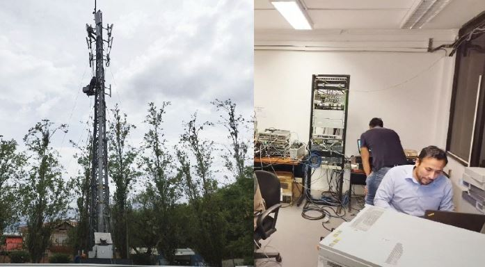

+8 años liderando optimización de redes móviles con impacto medible en KPIs
Soy Ingeniero en Telecomunicaciones con MBA y certificaciones en LTE RF Planning & Optimization, SCRUM y CCNA de Cisco. Durante mi carrera, he liderado proyectos de alto impacto en diseño, planificación, optimización de redes 2G/3G/LTE FDD-TDD para proveedores globales como Nokia y operadores como Entel, Viva, Tigo.
Mi enfoque combina expertise técnico en RF con habilidades de gestión para entregar resultados cuantificables: mejora de KPIs, optimización de CAPEX/OPEX y automatización de procesos mediante Python, PostgreSQL y herramientas de visualización.
Mejora de calidad en redes 2G/3G/LTE/5G mediante análisis de Drive Test, ajuste paramétrico y planificación de cobertura.
Implementación de soluciones analíticas con Tableau, QGIS, Python y PostgreSQL para medición y predicción de capacidad.
Desarrollo de pipelines ETL y scripts para automatizar flujos de trabajo, reduciendo tiempos de reporte en 70%.
Liderazgo en gestión de CAPEX/OPEX, coordinación de equipos técnicos y entrega de proyectos bajo metodologías ágiles.

Comparto algo de mi experiencia, formación y desarrollo continuo
Enfoque en gestión estratégica, liderazgo de equipos técnicos y toma de decisiones basada en datos.
Análisis geoespacial avanzado para visualización de cobertura RF y planificación de red.
Orquestación de pipelines ETL para procesamiento de datos de red a gran escala.
Estrategias avanzadas para mejora de accesibilidad en redes LTE multi-vendor.
Desarrollo de scripts para automatización de reportes RF y análisis paramétrico.
Metodologías para diagnóstico y resolución de caídas de llamada en LTE.
Configuración avanzada de parámetros y análisis de contadores en OSS-RC/ENM.
Optimización de calidad de voz sobre LTE y prevención de fallback a 3G/GSM.
Arquitecturas de red abiertas y componentes hardware para despliegue 5G.
Optimización paramétrica y análisis de rendimiento en plataformas Huawei.
Técnicas para reducción de Drive Tests mediante análisis geoespacial predictivo.